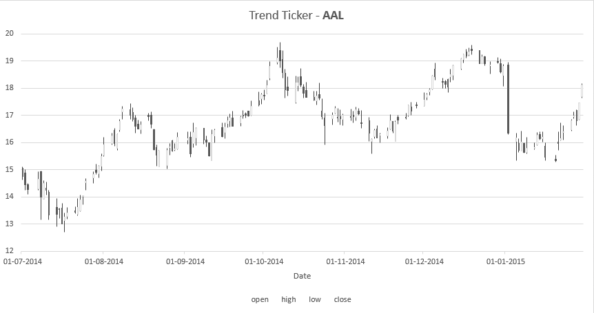
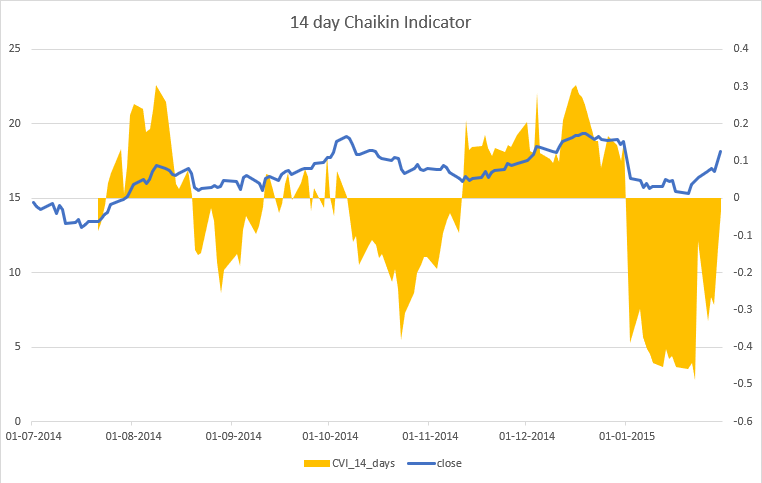
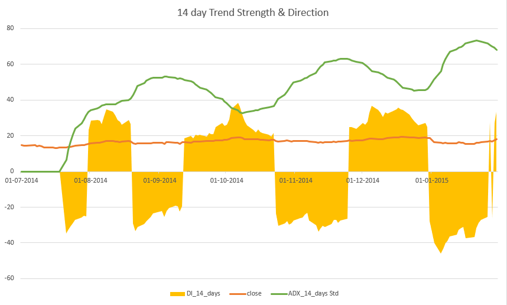

S&P 500 Quantitative model and Classifier
Analysis and Quantitative modeling of S&P 500 by creating volatility index, trading pairs and close price high-low classifier model.
Volatility Index
Approach
Given price data of S&P 500 for all 500 securities, following steps are taken to create its weekly volatility index:
- Separating ticker-wise data from the given data and arranging each ticker data in order of date.
-
For each ticker data, calculating daily returns as :
\[return_{daily}=\frac{price_{close}}{price_{open}} - 1\]
- Creating a table to store weekly information that will act as basis for index calculation.
- Getting last trading day of each week and number of trading days in the week across the period provided in the given data. Saving the same in the table created above.
-
Getting other information for each day as saved in above table from given data as:
- Close Price
- Open Price
- Weekly returns in same fashion as daily returns calculated above.
-
Calculating weekly volatility with daily return r for all trading days t as :
\[volatility_{week}=\sigma(r)\times\sqrt{t}\]
-
Calculating variable weekly volatility with weekly return rweek till the last weekday as :
\[\overline{volatility_{week}}=volatility_{week}\times\sigma(r_{week})\]Note – The steps from c to d are followed for every ticker.
- Creating tables to store most & least volatile stocks for a week.
-
For each last trading date of week:
- Collecting all information as gathered in above steps for each ticker.
- Arranging in ascending order of weekly volatility and saving data of top 10 securities to the table for the least volatile stocks.
- Arranging in descending order of weekly volatility and saving data of top 10 securities to the table for the least volatile stocks.
- Updating both tables for each last trading date.
- Saving the results to project directory.
Findings
-
Most Volatile:
- Securities that occurred more than 50 times are : CHK, INCY, AMD, FCX
- There are 95 Securities that appeared just once.
-
Least Volatile:
- Securities that occurred more than 20, but less than 30 times : PG,PEP,MON,TMK,KO
- There are 64 Securities that appeared just once:
- There are 334 securities that were present in both lists.
- There are 110 securities that appeared less than 10 times in the list of most volatile and were almost equally in the other list.
Conclusion
- The 110 securities as in point 2.d due to being there very few times in both the lists may be low risk investment options, yet providing returns and can be thought of long term investments.
- The 334 securities as in point 2.c may appear as an investment option that pose a balance between risk and returns.
- Other factors such as directional indicators, relative strength index, moving averages and volume indicators can also be incorporated to make a better form of index.
Exploratory Analysis
- Ticker – AAL(American Airlines Group)
- Across whole period close price for next day has gone up and down with respect to previous day, equally i.e. 629.
- Indicators for period – July 1, 2014 to January 30, 2015.
-
The candle sticks for the period:
A simple line drawn shows that it has been an upward trend till the last date of the period.

-
Chaikin Indicator for the period:

- Above graph shows indicator value about accumulation-distribution line.
- Value above the line implies accumulation of shares by market players thereby causing rise in stock’s price and vice-versa for distribution.
- It can be estimated that as indicator value goes to positive, stock price moves up and vice-versa.
- Also, a change from positive to negative or vice-versa in the indicator’s value implies a change in trend of stock price.
-
Trend Analysis for the period:

- The above graph shows trend factors as DI(Directional Indicator), one that determines change in trend and ADX(Average Direction Index) that determines the strength of a trend.
- The change in the value of DI implies a change in trend and a better value of ADX implies the strength of the change. Generally, a value of above 40 in ADX is considered a b trend.
- Analysis for period – December 1, 2014 to January 2, 2015:
- Chaikin Indicator states that from 1/12/2014 to 1/1/2015 the value is positive thereby implying an uptrend.
- The same can be confirmed with DI value.
- But since ADX value ranges as 45-60, shows the uptrend is definite.
- Close Price at 1/12/2014 is 47.88 and at 2/1/2015 is 53.91 hence, confirming accuracy of the analysis.
- Similar analysis can be carried out for other periods. But to have better trading decisions, other factors can also be taken into account to confirm the analysis.
Pair Trading
Approach
Given price data of S&P 500 for all 500 securities, following steps are taken to create pair trading strategy:
- Separating ticker-wise data from the given data and arranging each ticker data in order of date.
-
For each year:
- Create two square matrices(shape = [num_tickers, num_tickers]), one for storing variance values and the other for storing correlation values for tickers with respect to one another.
-
For each ticker:
- Set base data as first ticker data for that year.
- Traverse next ticker till last ticker.
- Set current data as current ticker data.
- Select data at common dates of both ticker data.
-
Assuming list of close prices X and Y and corresponding elements as x and y, calculate:
-
Variation in difference of close prices of both tickers.
\[X=price_{base}\] \[Y=price_{current}\] \[variation=\sqrt{\frac{1}{n}\times\sum_{i=1}^n((x-y)_i - (\overline{X-Y})^2}\]
-
Correlation coefficient of close prices of both tickers.
\[corr(x,y) = \frac{\sum_{i=1}^n(x_i-\overline{X})\times(y_i-\overline{Y})}{\sqrt{[\sum_{i=1}^n(x_i-\overline{X})^2]\times[\sum_{i=1}^n(y_i-\overline{Y})^2]}}\]
-
Variation in difference of close prices of both tickers.
- Store the calculated values in the corresponding matrices.
- Calculate final score as element-wise product of both matrices. Note – In order to avoid repetition in calculation, the matrices will be of triangular(upper or lower) form.
- Save the matrices for each year.
- Create tables to store top and bottom scores for each year.
-
For each year:
- Get corresponding matrix for the final score.
- Arrange the scores in ascending order for bottom scores and descending for top scores.
- For each score after ordering, locate the index in the matrix to know the ticker pair for the score.
- Using the index, get variance and correlation values from corresponding matrices for both the orders.
- Store the values(year, tickers, variance, correlation, similarity score) in the corresponding table for each order.
Findings
- All the pairs were different as most and least varying throughout the period 2013-2018.
- Pair A-AMZN was among least varying in years 2014, 2016 and 2017 but was the most varying in the year 2015.
- Year 2017 topped the list of most varying pairs, with CMG varying the most with BLK, BIIB and BK.
- A was present in the most varying list for years 2014-2017 at most twice with AZO, AMZN and AGN.
- Pair A-AZO was present in most varying pairs during years 2014, 2015 and 2017.
Conclusion
- Pair A-AMZN showed a good trading opportunity in the year 2015, while it was of least concern in the other years.
- CMG gave a lot of trading opportunities in the year 2017 with BLK, BIIB and BK.
- Ticker A gave most of the trading opportunity during the period.
Quantitative Classifier
Approach
Given a ticker, its price history data, following steps are taken to create a classifier that predicts if the close price for a given date is either higher or lower than the open of the day:
-
Feature Engineering:
- Known factors from given data – Date, Volume, Open, High, Low and Close. (OHLC data)
-
Using OHLC data, factors that emphasis analysis on volume movement, trend movement, its strength, price movement and price levels can be calculated.
-
Candle Stick factors
\[size=C-O\] \[shadow_{upper}=H-C\] \[shadow_{lower}=O-L\]However, these factors are kept positive but with change of sign the reference will change. That’s why they are calculated here as above.
-
Price Boundary factors
-
Pivot :
\[pivot=\frac{O+H+L+C}{4}\]
-
Support Levels
\[support_1=2\times pivot-H\] \[support_2=pivot-(H-L)\] \[support_3=L-2\times(H-pivot)\]
-
Resistance Levels
\[resistance_1=2\times pivot-L\] \[resistance_2=pivot+(H-L)\] \[resistance_3=H+2\times(pivot-L)\]
-
Pivot :
-
Trend Indicators
-
RSI – Relative Strength Index for d days in a period
\[\triangle_{price}=C-O\] \[strength_{period}=-1\times \frac{\sum_{i=1}^d\triangle_{price}(+)}{\sum_{i=1}^d\triangle_{price}(-)}\] \[RSI=100-\frac{100}{1+strength_{period}}\]
-
DI – Directional Indicator
\[upmove=H_{next}-H_{current}\] \[downmove=L_{current}-L_{next}\] when upmove > downmove and upmove > 0 \[DM(+) = upmove\] when downmove > upmove and downmove > 0 \[DM(-) = downmove\] \[TR=max[(H-L),(H-C),(L-C)]\]Smoothening the factors TR, DM(+) and DM(-) across d days in a period and p days in the last period for a factor f to form ATR, smoothened(+DM) and smoothened(-DM) where :\[smoothen(f,d)=\frac{smoothen(f)_{previous}+(d\times f_{current})}{d}\] \[smoothen_1=\overline{f}_{p}\] \[\pm DI=100\times\frac{smoothen(\pm DM)}{ATR}\]
-
ADX – Average Directional Index for period of d days
\[DX=100\times \frac{\mid DI(+)-DI(-)\mid}{DI(+)+DI(-)}\] \[ADX=smoothen(DX,d)\]
-
RSI – Relative Strength Index for d days in a period
-
Average Indicators
-
EMA – Exponential Moving Average for period of d days
\[weight=\frac{2}{d+1}\] \[EMA_1=\overline{C_d}\] \[EMA_i=(weight\times C) +(1-weight)\times EMA_{i-1}\]
-
EMA Convergence-Divergence, depicting mid and short for periods where daysmid > daysshort:
\[EMACD=EMA_{mid}-EMA_{short}\]
-
EMA – Exponential Moving Average for period of d days
-
Volume Indicators
-
OBV – On Balance Volume, for V as trading volume taken for the day for Ccurrent or Cprev whichever is maximum:
\[OBV_1=C\] \[OBV_i=OBV_{i-1}\pm V\]
-
CVI – Chaikin Volume Indicator for period of d days:
\[MFM=\frac{(C-L)-(H-C)}{H-L}\] \[MFV=MFM\times V\] \[CVI_d=\frac{\sum_{i=1}^dMFV}{\sum_{i=1}^dV}\]Note - Calculations have been carried out on span of short-term of 4 days and mid-term of 14 days.
-
OBV – On Balance Volume, for V as trading volume taken for the day for Ccurrent or Cprev whichever is maximum:
-
Candle Stick factors
- Target variable that states if close price is higher(+1) or lower(-1) than corresponding open.
- Preparing Train, Validation and Test data for model training.
- Setting hyperparameters for the model.
- Training model on the Train data.
- Evaluating the performance on Validation data using a metric.
- Once model beats the metric threshold, using the same on Test data.
Findings
-
Tested the algorithm on random 10 instances as:
Date Actual Predicted 23-01-2018 1 0 17-05-2017 1 1 14-08-2017 0 0 15-09-2017 0 0 22-11-2017 0 1 05-12-2017 1 0.5 22-12-2016 0 1 05-12-2016 1 0.5 24-01-2017 1 0 20-09-2016 0 0 -
Results:
-
Confusion Matrix
Predicted (0) Predicted (1) Actual (0) 3 2 Actual (1) 2 1 - Accuracy = (3+1)/(3+2+2+1) = 50 %
- Precision = 3/(2+3) = 60 %
- Recall = 3/(2+3) = 60 %
-
Confusion Matrix
Conclusion
- Feature engineering always require an exhaustive research or a domain expertise and is a challenge in every machine learning pipeline.
- ANN implemented here produces an accuracy of 50%, precision and recall of 60% on some random data points. But to get a better overview of performance more datapoints should be taken.
-
For every test date it is required to make the model again, since it saves the model from :
- Look-Ahead bias - A model trained till the test date is used for prediction on a new test date prior to the previous one.
- Underfitting - A model trained till the test date is used for prediction on a new test date later to the previous one.
- Other models apart from ANN should be implemented in an ensembled learning technique to ensure better model accuracy and stability.